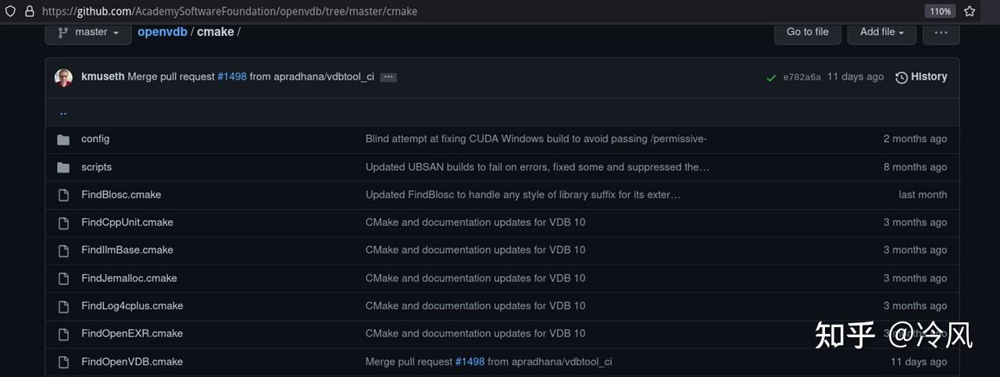
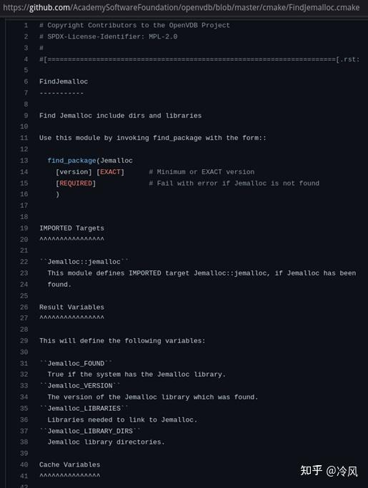
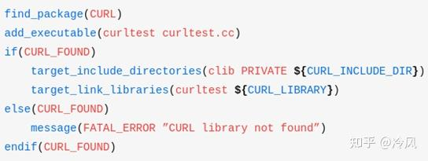
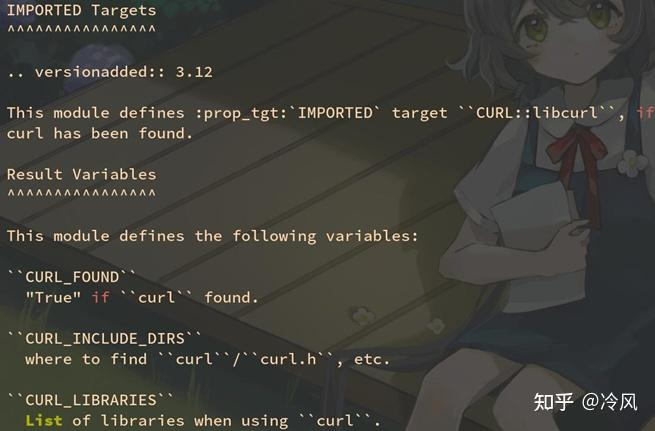
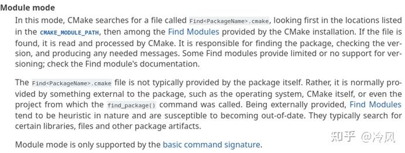
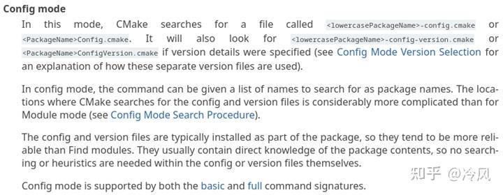

datetime:2023/04/17 11:28
author:nzb
find_package的用法
CMake模块化项目管理：第三方库/依赖性配置
用 find_package 寻找系统中安装的第三方库并链接他们。
find_package 语法
常用参数列表一览：
find_package(<PackageName> [version] [EXACT] [QUIET] [CONFIG] [MODULE]
[REQUIRED] [[COMPONENTS] [components...]]
[OPTIONAL_COMPONENTS components...]
)
find_package 命令用法举例
find_package(OpenCV)
查找名为 OpenCV 的包，找不到不报错，事后可以通过 ${OpenCV_FOUND} 查询是否找到。
find_package(OpenCV QUIET)
查找名为 OpenCV 的包，找不到不报错，也不打印任何信息。
find_package(OpenCV REQUIRED)# 最常见用法
查找名为 OpenCV 的包，找不到就报错（并终止 cmake 进程，不再继续往下执行）。
find_package(OpenCV REQUIRED COMPONENTS core videoio)
查找名为 OpenCV 的包，找不到就报错，且必须具有 OpenCV::core 和 OpenCV::videoio 这两个组件，如果没有这两个组件也会报错。
find_package(OpenCV REQUIRED OPTIONAL_COMPONENTS core videoio)
查找名为 OpenCV 的包，找不到就报错，可具有 OpenCV::core 和 OpenCV::videoio 这两个组件，没有这两组件不会报错，通过 ${OpenCV_core_FOUND} 查询是否找到 core
组件。
find_package 说是找“包(package)”，到底是在找什么？
寻找包配置文件
find_package(OpenCV) 实际上是在找一个名为 OpenCVConfig.cmake 的文件。
注：出于历史兼容性考虑，除了
OpenCVConfig.cmake以外OpenCV-config.cmake这个文件名也会被 CMake 识别到。
同理，find_package(Qt5) 则是会去找名为 Qt5Config.cmake 的文件。
这些形如 包名 + Config.cmake 的文件，我称之为包配置文件。
Qt5Config.cmake 是在安装 Qt5 时，随 libQt5Core.so 等实际的库文件，一起装到系统中去的。
以 Arch Linux 系统为例：
- 包配置文件位于
/usr/lib/cmake/Qt5/Qt5Config.cmake。 - 实际的动态库文件位于
/usr/lib/libQt5Core.so。
以 Ubuntu 22.04 系统为例：
- 包配置文件位于
/usr/lib/x86_64-linux-gnu/cmake/Qt5/Qt5Config.cmake - 实际的动态库文件位于
/usr/lib/x86_64-linux-gnu/libQt5Core.so
包配置文件包含什么？
因此 find_package 并不是直接去找具体的动态库文件和头文件（例如libQt5Core.so）。而是去找包配置文件（例如Qt5Config.cmake）， 这个配置文件里包含了包的具体信息
，包括动态库文件的位置，头文件的目录，链接时需要开启的编译选项等等。
而且某些库都具有多个子动态库，例如 Qt 就有 libQt5Core.so、libQt5Widgets.so、libQt5Network.so。 因此 CMake 要求所有第三方库作者
统一包装成一个 Qt5Config.cmake 文件包含所有相关信息（类似于 nodejs 的 package.json），比你单独的一个个去找动态库文件要灵活的多。
在
XXXConfig.cmake文件中，库的路径都是相对路径，比如说../../libXXX.so，而不是绝对路径/usr/lib/libXXX.so...这样做可以让CMake更容易找到对应的动态库，因为不一定每个人的系统库都是安装在/usr/lib/...下！比如Arch Linux和Ubuntu的库安装路径就不一样！因此相对路径会更加方便。
包配置文件怎么来的？
包配置文件由第三方库的作者（Qt的开发团队）提供，在这个库安装时（Qt的安装程序或apt install等）会自动放到 /usr/lib/cmake/XXX/XXXConfig.cmake 这个路径（其中XXX是包名），供
CMake 用户找到并了解该包的具体信息。
/usr/lib/cmake 这个位置是 CMake 和第三方库作者约定俗成的，由第三方库的安装程序负责把包配置文件放到这里。如果第三方库的作者比较懒，没提供 CMake 支持（由安装程序提供XXXConfig.cmake
），那么得用另外的一套方法（FindXXX.cmake），稍后细谈。
Windows 系统下的搜索路径
<prefix>/
<prefix>/cmake/
<prefix>/<name>*/
<prefix>/<name>*/cmake/
<prefix>/<name>*/(lib/<arch>|lib*|share)/cmake/<name>*/
<prefix>/<name>*/(lib/<arch>|lib*|share)/<name>*/
<prefix>/<name>*/(lib/<arch>|lib*|share)/<name>*/cmake/
其中：
<prefix>是变量${CMAKE_PREFIX_PATH}，Windows 平台默认为C:/Program Files。<name>是你在find_package(<name> REQUIRED)命令中指定的包名。<arch>是系统的架构名。
Unix 类系统下的搜索路径
<prefix>/(lib/<arch>|lib*|share)/cmake/<name>*/
<prefix>/(lib/<arch>|lib*|share)/<name>*/
<prefix>/(lib/<arch>|lib*|share)/<name>*/cmake/
<prefix>/<name>*/(lib/<arch>|lib*|share)/cmake/<name>*/
<prefix>/<name>*/(lib/<arch>|lib*|share)/<name>*/
<prefix>/<name>*/(lib/<arch>|lib*|share)/<name>*/cmake/
其中：
<prefix>是变量${CMAKE_PREFIX_PATH}，Unix 平台默认为/usr。<name>是你在find_package(<name> REQUIRED)命令中指定的包名。<arch>是系统的架构，例如x86_64-linux-gnu或i386-linux-gnu。- （用于伺候 Ubuntu 喜欢把库文件套娃在
/usr/lib/x86_64-linux-gnu目录下）
- （用于伺候 Ubuntu 喜欢把库文件套娃在
举例说明 find_package 搜索路径
例如你是 64 位的 Linux 系统，find_package(Qt5 REQUIRED) 会依次搜索：
/usr/lib/cmake/Qt5/Qt5Config.cmake
/usr/lib/x86_64-linux-gnu/cmake/Qt5/Qt5Config.cmake
/usr/share/cmake/Qt5/Qt5Config.cmake
/usr/lib/Qt5/Qt5Config.cmake
/usr/lib/x86_64-linux-gnu/Qt5/Qt5Config.cmake
/usr/share/Qt5/Qt5Config.cmake
/usr/Qt5/lib/cmake/Qt5/Qt5Config.cmake
/usr/Qt5/lib/x86_64-linux-gnu/cmake/Qt5/Qt5Config.cmake
/usr/Qt5/share/cmake/Qt5/Qt5Config.cmake
/usr/Qt5/lib/Qt5/Qt5Config.cmake
/usr/Qt5/lib/x86_64-linux-gnu/Qt5/Qt5Config.cmake
/usr/Qt5/share/Qt5/Qt5Config.cmake
例如你是 64 位的 Windows 系统，find_package(Qt5 REQUIRED) 会依次搜索：
C:/Program Files/Qt5Config.cmake
C:/Program Files/cmake/Qt5Config.cmake
C:/Program Files/Qt5/Qt5Config.cmake
C:/Program Files/Qt5/cmake/Qt5Config.cmake
C:/Program Files/Qt5/lib/cmake/Qt5/Qt5Config.cmake
C:/Program Files/Qt5/lib/x86_64-windows-gnu/cmake/Qt5/Qt5Config.cmake
C:/Program Files/Qt5/share/cmake/Qt5/Qt5Config.cmake
C:/Program Files/Qt5/lib/Qt5/Qt5Config.cmake
C:/Program Files/Qt5/lib/x86_64-windows-gnu/Qt5/Qt5Config.cmake
C:/Program Files/Qt5/share/Qt5/Qt5Config.cmake
还有一点，<name> 可以有额外后缀，且不分大小写（无论 Linux 还是 Windows），例如在Windows系统中：
C:/Program Files/Qt5/cmake/Qt5Config.cmake
C:/Program Files/Qt5.12.1/cmake/Qt5Config.cmake
C:/Program Files/qt5dnmd/cmake/Qt5Config.cmake
都是可以被 find_package(Qt5 REQUIRED) 搜索到的。
在 Linux 系统中：
/usr/lib/cmake/OpenCV/OpenCVConfig.cmake
/usr/lib/cmake/opencv4/OpenCVConfig.cmake
都是可以被 find_package(OpenCV REQUIRED) 搜索到的。
安装在非标准路径的库如何处理？
以 Qt5 为例，如果你安装在下列标准路径，find_package 能够自动找到。
- Windows：
C:/Program Files/Qt5.12.1/lib/cmake/Qt5/Qt5Config.cmake。 - Linux：
/usr/lib/cmake/Qt5/Qt5Config.cmake。
但是假如我的库不是装在这些标准路径，而是我自定义的路径，怎么办？ 而且即使你不自定义安装路径，Windows 版的 Qt 默认安装就会安装到：
C:/Qt5.12.1/msvc2017_64/lib/cmake/Qt5/Qt5Config.cmake。
何况我们同学有的还喜欢装到 D 盘去，Windows 是非标准路径的重灾区，他就没有一个统一的 /usr/lib 目录。然而你一旦把库安装到非标准路径，find_package 是找不到的。
这时你需要手动指定一个变量告诉他在哪儿，可以是普通变量 ${Qt5_DIR}，也可以是环境变量 $ENV{Qt5_DIR}，两个中只要设置了任何一个 find_package 都可以识别到。
变量一般通过命令行 -DQt5_DIR=”C:/Program Files/Qt5.12.1/lib/cmake/Qt5” 设置。
举例，Windows 系统，Qt5
例如我把 Qt5 安装到了 D:/Qt5.12.1。 首先找到他里面的 Qt5Config.cmake 文件所在位置（可以用文件管理器的“搜索”功能或者everything）。
假如你找到该文件的位置是 D:/Qt5.12.1/msvc2017/lib/cmake/Qt5/Qt5Config.cmake，那么请你设置变量 Qt5_DIR
为 D:/Qt5.12.1/msvc2017/lib/cmake/Qt5。有三种设置方法：
- 单次有效。在
configure阶段，可以从命令行设置（注意要加引号）：cmake -B build -DQt5_DIR=”D:/Qt5.12.1/msvc2017/lib/cmake/Qt5” - 全局启用。右键“我的电脑”->“管理”->“高级”添加一个环境变量
Qt5_DIR值为D:/Qt5.12.1/msvc2017/lib/cmake/Qt5，然后重启Visual Studio。 这样以后你每次构建任何项目，find_package都能自动找到这个路径的Qt5包了。 - 单项目有效。直接在你自己项目的
CMakeLists.txt最开头写一行（注意要加引号）：set(Qt5_DIR ”D:/Qt5.12.1/msvc2017/lib/cmake/Qt5”)# 一定要加在最前面！
举例，Linux 系统，Qt5
例如我把 Qt5 安装到了 /opt/Qt5.12.1。 首先找到他里面的 Qt5Config.cmake 文件所在位置（可以用文件管理器的“搜索”功能）。
假如你找到该文件的位置是 /opt/Qt5.12.1/lib/cmake/Qt5/Qt5Config.cmake，那么请你设置变量 Qt5_DIR 为 /opt/Qt5.12.1/lib/cmake/Qt5。有三种设置方法：
- 单次有效。在
configure阶段，可以从命令行设置：cmake -B build -DQt5_DIR=”/opt/Qt5.12.1/lib/cmake/Qt5” - 全局启用。修改你的
~/.bashrc文件添加环境变量：export Qt5_DIR=”/opt/Qt5.12.1/lib/cmake/Qt5”，然后重启终端。这样以后你每次构建任何项目，find_package都能自动找到这个路径的Qt5包了。 - 单项目有效。直接在你自己项目的
CMakeLists.txt最开头写一行：set(Qt5_DIR ”/opt/Qt5.12.1/lib/cmake/Qt5”)# 一定要加在最前面！
三种方案利弊分析
- 单次有效（通过命令行）最安全，高度推荐。
- 全局有效（添加环境变量）可能影响以后其他项目。 比如你的 A 项目依赖 Qt5.12.1，你设置了环境变量
Qt5_DIR=/opt/Qt5.12.1，后来又搞了个 B 项目依赖Qt5.10.3，但是你忘了你设置过全局的环境变量指向 5.12.1 了，导致版本冲突。 单项目有效（写死在 CMakeLists.txt）虽然方便了你，但是你的 CMakeLists.txt 拿到别人电脑上就冲突了 （例如你通过 GitHub 开源的），可能你set(Qt5_DIR D:/Qt5)，而人家却需要set(Qt5_DIR E:/Qt5)。
所以“单次有效”虽然劳驾您的高抬贵手每次命令行打一下 -DQt5_DIR=”D:/Qt5”，但人家也打一下 -DQt5_DIR=”E:/Qt5”，就没有冲突，各美其美，美美与共，赋能多元化社会，下沉团队合作发力面。
实际上只要你不删 build，不需要每次都 -DQt5_DIR 一下，CMake 具有“记忆”功能。
cmake -B build -DQt5_DIR=D:/Qt5# 只需要第一次指定好cmake -B build# 以后第二次运行可以省略！rm -rf build# 只有清理了 build 以后，cmake -B build -DQt5_DIR=D:/Qt5# 才需要重新指定。
科普：类似 Qt 这种亲 Unix 软件，在 Windows 下的目录组织格式
例如你安装 Qt 时设置安装路径为 D:/Qt5.12.1。 则你会看到他下面有几个子目录：
D:/Qt5.12.1/msvc2017_64（由VS2017编译64位版本）D:/Qt5.12.1/mingw_64（由MinGW编译64位版本）
这几个目录里又分别包含：
D:/Qt5.12.1/msvc2017_64/include/qt/QtCore/qstring.h（实际的头文件，属于Qt5::Core）D:/Qt5.12.1/msvc2017_64/bin/Qt5Core.dll（实际的动态库文件，对应Qt5::Core）D:/Qt5.12.1/msvc2017_64/lib/Qt5Core.lib（实际的静态库文件，对应Qt5::Core）D:/Qt5.12.1/msvc2017_64/lib/cmake/Qt5/Qt5Config.cmake（包配置文件）
可以看到尽管是 Windows 版的 Qt，他内部仍然是在模仿 Linux 下 /usr 的目录组织格式。
注意这里的 Qt5Core.dll位于 bin 目录，而不是 lib 目录，这是为什么呢？
因为 Windows 要求 exe 和 dll 位于同一目录，否则 exe 在运行时就会找不到 dll。 为了符合 Linux 分离 bin 和 lib 的组织格式，又要伺候 Windows 的沙雕同目录规则， 我们通常把 dll动态库文件视为“可执行文件”和 exe 一起放到 bin 目录， 而静态库则没有运行时必须同目录的限制，所以可以照常放到 lib 目录。
科普：类似 Qt 这种亲 Unix 软件，在 Linux 下的目录组织格式
Linux 用户从源码安装 Qt 这种库时，会有一个 --prefix 选项，指定安装的根路径。 默认的 --prefix 是 /usr，这个路径由全部软件共享，Qt 会把他的文件安装到以下目录：
/usr/include/qt/QtCore/qstring.h（实际的头文件，对应Qt5::Core）/usr/lib/libQt5Core.so（实际的动态库文件，对应Qt5::Core）/usr/lib/libQt5Core.a（实际的静态库文件，对应Qt5::Core）/usr/lib/cmake/Qt5/Qt5Config.cmake（包配置文件，用于find_package）
假如你指定 --prefix=/usr/local，这个路径通常是用户自己手动装的软件，那么就会变成： /usr/local/lib/cmake/Qt5/Qt5Config.cmake
假如你指定 --prefix=/opt/myqtroot，那么就会变成：/opt/myqtroot/lib/cmake/Qt5/Qt5Config.cmake
伺候这种非常规安装，就需要设置变量 -DQt5_DIR=/opt/myqtroot/lib/cmake/Qt5 了。
科普：亲 Unix 软件从源码安装的通用套路
通过Makefile 构建系统：
./configure --prefix=/usr --with-some-options# 生成 Makefile（这个 configure 脚本由 Autoconf 生成）make -j 8# 8 核心编译，生成libtest.sosudo make install# 安装，拷贝到/usr/lib/libtest.so
通过CMake 构建系统：
cmake -B build -DCMAKE_INSTALL_PREFIX=/usr -DWITH_SOME_OPTIONS=ON# 生成Makefile cmake --buildbuild --parallel 8# 8 核心编译，生成libtest.sosudo cmake --build build --target install# 安装，拷贝到/usr/lib/libtest.so
注：如果 -DCMAKE_INSTALL_PREFIX=/usr/local 则会拷贝到 /usr/local/lib/libtest.so
如果第三方库发懒，没有提供 Config 文件怎么办？
绝大多数常用 C++ 库都提供了 CMake 支持（即使他们本身不一定是用 CMake 构建的）：
- /usr/lib/cmake/Boost-1.80.0/BoostConfig.cmake
- /usr/lib/cmake/opencv4/OpenCVConfig.cmake
- /usr/lib/cmake/Qt5/Qt5Config.cmake
这些 Config 文件都是由第三方库负责安装到 /usr/lib/cmake。
通过CMake官方提供的 FindXXX.cmake
但是，也有少数不听话的库，官方不提供 CMake 支持，即安装时不自带 Config 文件。恼人的是，这些不听话的库有些竟然是非常热门的库！例如 Python，CUDA，Jemalloc。
- 为了不影响 CMake 用户体验，CMake 发明了 Find 文件（
FindXXX.cmake），你不支持我是吧？我支持你！Find 文件会在 CMake 安装时自动安装到/usr/share/cmake/Modules。 - 包搜索文件（
FindXXX.cmake）可以在不知道包具体位置信息的情况下搜索他们（在/usr/lib等默认路径搜索）。
这些都是 CMake 自带的包搜索文件：
/usr/share/cmake/Modules/FindCUDAToolkit.cmake/usr/share/cmake/Modules/FindPython.cmake
通过热心网友提供的 FindXXX.cmake
那么如果有个不太热门的第三方库没提供包配置文件，CMake 也没提供包搜索文件，我们该如何找到他？这就需要自己提供包搜索文件了！别担心，你不用自己写， GitHub 上有很多志士仁人已经写过了对应的包搜索文件，你搜一下 FindXXX.cmake 就能找到了。


ConfigXXX.cmake文件通常风格比较统一，都是XXX::xxx这种格式。- 但是不同的 Find 文件，特别是这种网上志士仁人自己编写的文件，风格可能千差万别（没办法，毕竟不是官方的支持嘛），很多都还是古代 CMake 的用法，例如 ${XXX_LIBRARIES}。
- 关于具体使用的细节可以打开
FindXXX.cmake文件查看， - 文件的前半部分一般是注释，会讲解如何使用。
- 关于具体使用的细节可以打开
现在我们就知道该如何解决这个问题了：
- 下载这个文件，放到
cmake/FindXXX.cmake。 - 然后在
CMakeLists.txt文件的最前方写一行：set(CMAKE_MODULE_PATH “${CMAKE_CURRENT_LIST_DIR}/cmake;${CMAKE_MODULE_PATH}”)
这样做之后， find_package(XXX) 就会用你下载的这个 FindXXX.cmake 去找包了。
现代 vs 古代：用法上完全不同！
- OpenCVConfig.cmake（现代）
- FindCURL.cmake（古代）

- 可以看得到古代CMake不如现代CMake的用法来得统一
- 比如说
target_link_libraries(curltest ${CURL_LIBRARY})和target_include_directories(clib PRIVATE ${CURL_INCLUDE_DIR})就需要自己去看官方文档， 然后才知道里面到底返回了什么变量，CURL在这里返回的变量中就有CURL_LIBRARY和CURL_INCLUDE_DIR - 远远不如现代CMake的
target_link_libraries(main PUBLIC OpenCV::core)来得统一。
现代和古代的区别
不管是 Find 类还是 Config 类，一定要打开相应的 cmake 文件看看注释，才能确定他是古代风格还是现代风格。
- 古代 CMake 的命名规范高度不统一，有的是
${XXX_LIBRARIES}，有的又是${XXX_LIBRARY}，非常沙雕，需要看相应 cmake 文件的注释，才能确定具体是怎么命名的。 - 现代 CMake 就好多了，统一用
包名::组件名的格式。但是具体的组件名，还是要查看 cmake 文件中的注释才能确定。例如CURL::libcurl OpenCV::core Qt5::core TBB::tbb等。
古代（仅用于伺候很老的库）：
find_package(XXX)
if (NOT XXX_FOUND)
message(FATAL_ERROR “XXX not found”)
endif()
target_include_directories(yourapp ${XXX_INCLUDE_DIRS})
target_link_libraries(yourapp ${XXX_LIBRARIES})
现代（推荐）：
find_package(XXX REQUIRED COMPONENTS xxx)
target_link_libraries(yourapp XXX::xxx)
大多都的库能同时兼容现代和古代
- 大多现代的 Find/Config 文件，都同时兼容现代和古代的用法。
- 特别古老的 Find 文件，则只能用古代的用法。
- 例如下图是
FindCURL.cmake的注释，可以看到IMPORTED Targets章节是在介绍现代的用法，而Result Variables章节是在介绍古代的用法，我们尽量用现代的那种就行。

官方文档：find_package 的两种模式
其实上面我们已经讲过了，就是Module模式和Config模式两种。


指定使用哪种模式
只使用Module模式：
find_package(TBB MODULE REQUIRED)- 只会寻找
FindTBB.cmake，搜索路径：${CMAKE_MODULE_PATH}（默认为/usr/share/cmake/Modules）
只使用Config模式：
find_package(TBB CONFIG REQUIRED)- 只会寻找
TBBConfig.cmake，搜索路径：${CMAKE_PREFIX_PATH}/lib/cmake/TBB（默认为/usr/lib/cmake/TBB）${TBB_DIR}或$ENV{TBB_DIR}
不指定使用模式：
find_package(TBB REQUIRED)- 不指定则两者都会尝试，先尝试
FindTBB.cmake，再尝试TBBConfig.cmake。
关于 vcpkg 的坑
- 刚刚说了有些懒惰第三方库，比如 Jemalloc，他不提供 Config 文件，需要我们自己手写个（或抄别人开源项目里的） Find 文件，用起来很不方便。
- 但是 vcpkg 会为所有第三方库，即使是懒惰的 Jemalloc，都配备一个 Config 文件方便你使用 find_package 导入。所以用 vcpkg
时，尽量用
find_package(XXX CONFIG REQUIRED)避免被 CMake 自带的 Find 文件误导找到别的地方的库（并非 vcpkg 安装的那个）。 - 另外注意 vcpkg 需要的
CMAKE_TOOLCHAIN_FILE如果你用 set 设置，必须在 project 命令前面，并且修改这个变量后要删除 build 目录重新cmake -B build一遍才能生效（否则会在旧的环境里找，找不到 vcpkg 装的库）。
科普：语义版本号（semantic versioning）系统
软件行业记录版本迭代普遍采用的是一套所谓的语义版本号系统，英文简称 semver。
通常他的格式是三个用点分隔开来的十进制数字：<major>.<minor>.<patch>，例如：1.2.0，0.6.8，18.11.0
major称为主版本号，出现功能重大变更，以至于和旧 API 不兼容的时候会增加该号。minor称为次版本号，功能有所变更或增加，但依然和旧的 API 兼容时会增加该号。patch称为补丁版号，功能没有改变，只是修复了一些 bug 就重新发布时会增加该号。
也有的软件不拘一格（例如 zeno），索性用发布的日期作为版本号的三个数字，例如 2022.11.2。不论采用哪种编号方案，都是几个用点分开的数字，并且数字越大越新，且优先比较靠前面的数字。
因此为了通用，CMake 支持最多四个点分开的版本号：<major>.<minor>.<patch>.<tweak>。并且如果你写 0.6.8 他会自动帮你把多余的 tweak 等于 0
，也就是说 0.6.8 == 0.6.8.0，1.2 == 1.2.0 == 1.2.0.0。
比较版本号时，可以用 if (${XXX_VERSION} VERSION_LESS 3.1.0) 判断大小。
find_package 命令指定版本
find_package(OpenCV REQUIRED)- 查找名为 OpenCV 的包，不限版本，事后可以通过
${OpenCV_VERSION}查询找到的版本。
- 查找名为 OpenCV 的包，不限版本，事后可以通过
find_package(OpenCV 2.0.1 REQUIRED)- 查找版本在 2.0.1 以上的 OpenCV 包（version >= 2.0.1）。
find_package(OpenCV 2.0.1 EXACT REQUIRED)- 查找版本刚好为 2.0.1 的 OpenCV 包（version == 2.0.1）。
如果没写全，则没写的部分默认为 0。例如下列三者等价：
find_package(OpenCV 2 REQUIRED)find_package(OpenCV 2.0 REQUIRED)find_package(OpenCV 2.0.0 REQUIRED)
总结
安装 TBB：
cd tbb
./configure --prefix=/opt/tbbinstalldir
make -j 8
sudo make install
在你的项目里使用 TBB：
cd yourapp
cmake -B build -DTBB_DIR=/opt/tbbinstalldir/lib/cmake/TBB
cmake --build build --parallel 8
CMakeLists.txt 这样写：
project(yourapp)
add_executable(yourapp yourmain.cpp)
find_package(TBB CONFIG REQUIRED COMPONENTS tbb)
target_link_libraries(yourapp PUBLIC TBB::tbb)
古代 CMake 常见问题
- 1、
target_link_libraries(yourapp ${XXX_LIBRARIES}) - 2、
target_include_directories(yourapp ${XXX_INCLUDE_DIRS})
- Q: 我明明链接了 XXX 库，编译时却报错“找不到头文件 XXX.h”怎么办？
- A: 你漏了上面的 2。
- Q: 我明明编译都通过了，链接却报错“undefined symbol：XXXfunc”怎么办？
- A: 你漏了上面的 1。
打印检查一下这两个变量是不是空的：message(“!!!!!!” ${XXX_INCLUDE_DIRS})
如果为空说明你变量名打错了，CMake 特色就是找不到变量不报错，而是视为空字符串。
去看一下 FindXXX.cmake 里的注释（那就是文档），确定一下到底是什么名字。
少见的 add_subdirectory 邪教
大部分第三方库都需要提前安装好，然后再 find_package 找到他，然后才能链接。 也有少数第三方库为了方便，还支持作为子项目加到你的项目中来，这种就不需要 :: 语法。
标准方法：
find_package(spdlog REQUIRED)
target_link_libraries(yourapp PUBLIC spdlog::spdlog)
邪教方法：
add_subdirectory(spdlog) # 需要下载好他们的源码放到你的根目录下
target_link_libraries(yourapp PUBLIC spdlog)